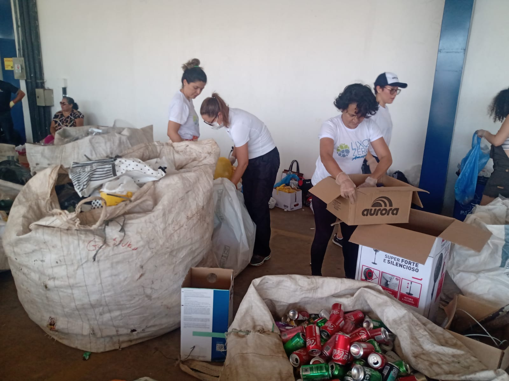

NOSSA MISSÃO
A missão do Instituto Lixo Zero Amapá, como parte da rede Lixo Zero Brasil, é promover a conscientização e disseminação do conceito de Lixo Zero.
Isso envolve a redução máxima da geração de resíduos, incentivando práticas sustentáveis e soluções para que os materiais sejam reintegrados à cadeia produtiva, evitando o descarte em aterros sanitários e o desperdício.
O foco é mobilizar a sociedade para transformar hábitos de consumo e gestão de resíduos, com o objetivo de criar um futuro mais sustentável e responsável ambientalmente.